7210E44 R.R. UNDERDOOR SIDE MEMBER OUTER TRIM/
- Path
- Procedures > 72 PANELS AND FRAME > 7210 REMOVING REFITTING > 7210E EXTERNAL PARTS > 7210E44 R.R. UNDERDOOR SIDE MEMBER OUTER TRIM/
- Kind
- repair procedure (removal / refitting; the operation number is the code)
- Applies to
- all engines; all production periods
- Interactive page
- https://sloeber94.github.io/elrnDB-fUlss/en/#/179007973
Applies to: all engines; all production periods
Applies to: all engines; all production periods
 Removing
Removing
 Refitting
Refitting- Work on the component highlighted having previously made sure that the equipment illustrated below is available:
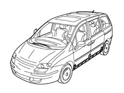
Applies to: all engines; all production periods
1. Outer side member
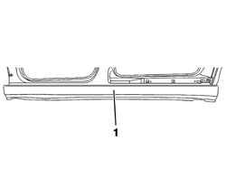
Applies to: all engines; all production periods
- Check that the components connected are not distorted by checking the bodyshell alignment measurements using suitable equipment (gauges, templates or jigs).
- Using a 1 mm grinder and an 8 mm drill bit make the cuts and drill the holes as illustrated for subsequent fill welding.
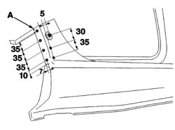
Applies to: all engines; all production periods
- Using a power saw and an 8 mm drill bit make the cuts and drill the holes in the front foot as illustrated for subsequent fill welding.
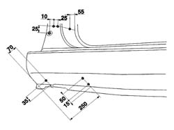
Applies to: all engines; all production periods
- Using a 1 mm grinder, make the cut as illustrated in the diagram (B)
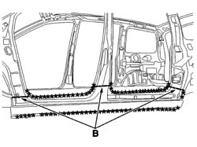
Applies to: all engines; all production periods
- Reduce the spot welds indicated using a chamfering machine.
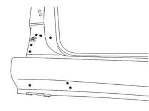
Applies to: all engines; all production periods
- Reduce the spot welds indicated using a chamfering machine.
- Remove the outer side member.
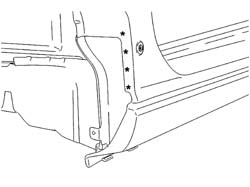
Applies to: all engines; all production periods
- Prepare the edges to be welded and protect them using thermoweldable primer
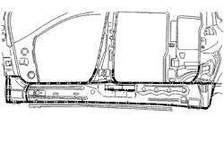
Applies to: all engines; all production periods
Refitting
Removing- Position the outer side member, the front door, the front wing and the rear wing and fasten using self-locking clamps then, after having checked that the alignment and the clearances are correct, remove the rear wing, the front wing and the front door and proceed as described below.
- Trace the cuts on the side member and remove it.
- Grind the cuts and prepare the edges.
- Prepare the edges to be welded and protect them using thermoweldable primer.
- Apply structural adhesive (C) as illustrated in the diagram.
- Apply sealing compound along the lines illustrated in the diagram (D).
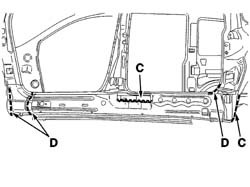
Applies to: all engines; all production periods
- Proceed with MIG welding (E) and later on using a spot welder as illustrated in the diagram then grind the welds using a disc grinder.
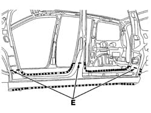
Applies to: all engines; all production periods
- Proceed with MIG fill welding and then grind the welds using a disc grinder.
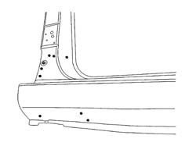
Applies to: all engines; all production periods
- Proceed with MIG fill welding and then grind the welds using a disc grinder.
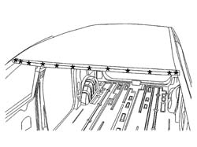
Applies to: all engines; all production periods
- Finish off by surfacing the area illustrated in the diagram.
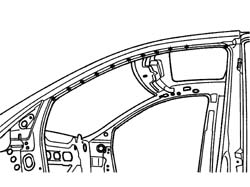
Applies to: all engines; all production periods
- Apply finishing compound starting from the bottom of the vehicle.
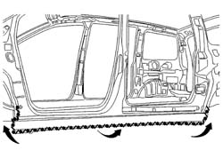
Applies to: all engines; all production periods
- Check that the welded component is correctly positioned.
- Apply electro-galvanizing paint to the ground parts.
- Proceed with the application of wax and foam in the box sections (front and rear pillars).